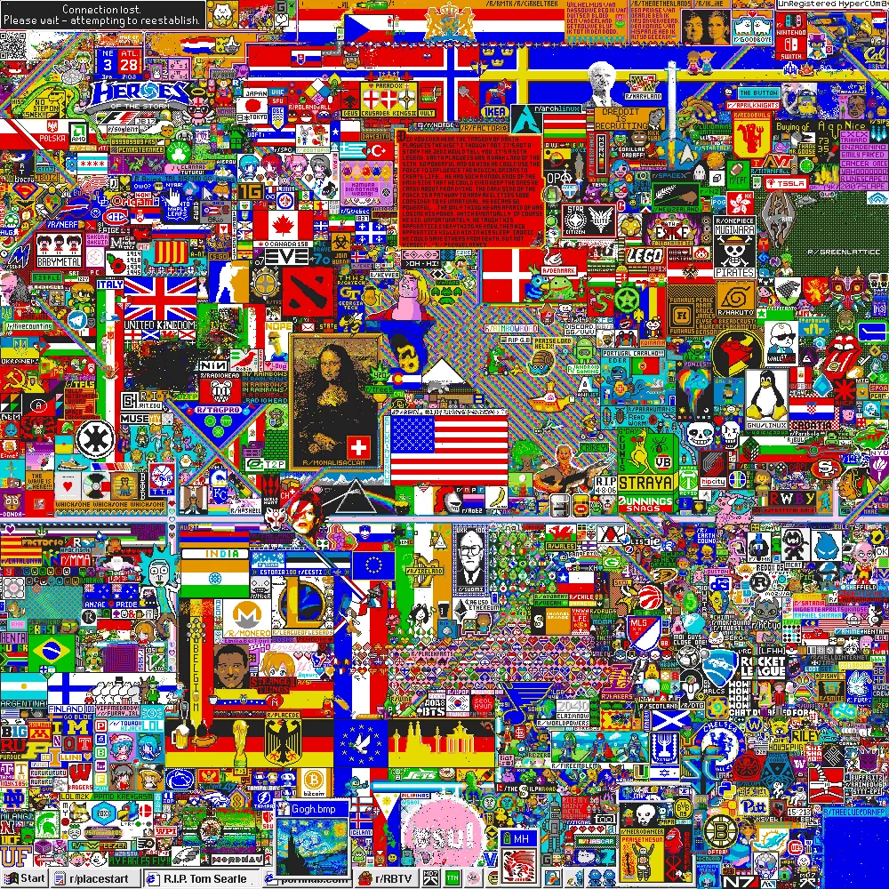
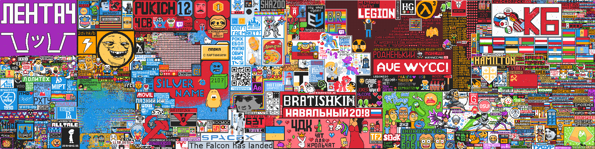
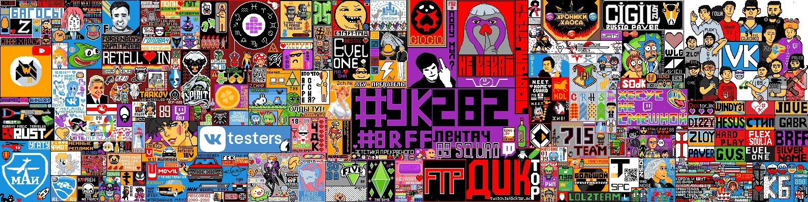
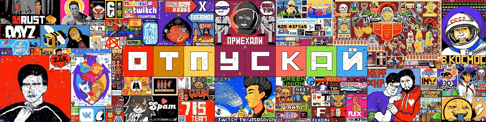
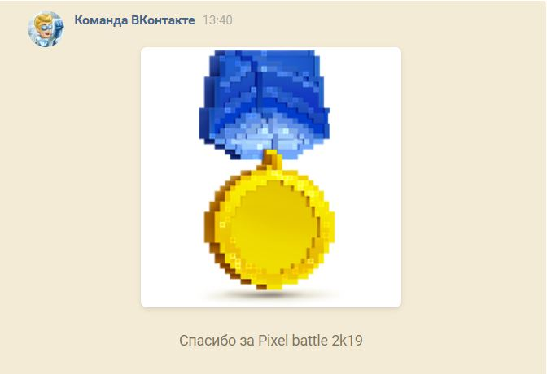
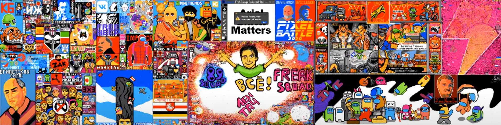
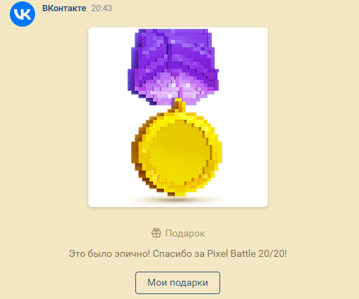
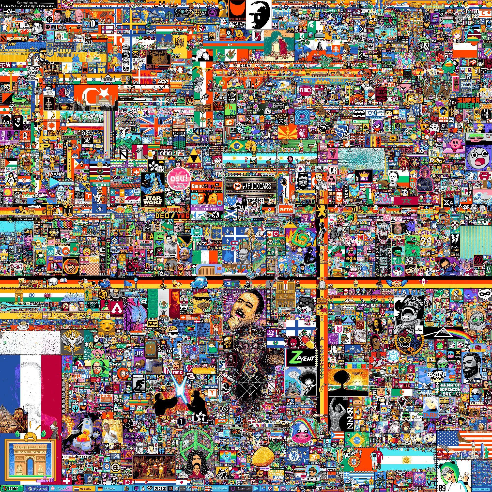

Все битвы |
|||
|---|---|---|---|
| Битва | Где проходила | Начало - Окончание | Полотно |
| r/place | reddit.com | 01.04.2017 - 03.04.2017 | 1000x1000 |
| PixelBattle 2017 | vk.com | 10.10.2017 - 13.10.2017 | 1590x400 |
| PixelBattle 2018 | vk.com | 10.10.2018 - 13.10.2018 | 1590x400 (не точно) |
| PixelBattle 2019 | vk.com | 10.10.2019 - 13.10.2019 | 1590x400 |
| StreamersPixelBattle | donationalerts.com | 25.12.2019 - 10.01.2020 | ??? |
| PixelBattle 2020 | vk.com | 10.10.2020 - 13.10.2020 | 1590x400 |
| r/place | reddit.com | 01.04.2022 - 04.04.2022 | 1000x1000(1День) 1000x2000(2,3День) 2000x2000(4День) |
r/place был социальным экспериментом, размещенным на сайте Reddit в День дураков первого апреля 2017 года.
Эксперимент 2017 года включал онлайн-холст, расположенный в сабреддите под названием r/place, в котором зарегистрированные пользователи могли редактировать холст, изменяя цвет одного пикселя выбирая из 16-цветовой палитры. После размещения каждого пикселя таймер не позволял пользователю размещать больше пикселей в течение времени, варьирующегося от 5 до 20 минут. Идея эксперимента была задумана Джошем Уордлом. Эксперимент был прекращен администраторами Reddit примерно через 72 часа после его создания, 3 апреля 2017 года. Более 1 миллиона пользователей отредактировали холст, разместив в общей сложности около 16 миллионов пикселей, и на момент завершения эксперимента более 90 000 пользователей активно просматривали или редактировали холст. Эксперимент получил высокую оценку за то, что он отражает культуру онлайн-сообществ Reddit и интернет-культуры в целом.
Итоговое полотно:
В 2017 году соцсеть "Вконтакте" запустила интерактивное полотно в честь своего 11 летия, объединив на одном полотне больше половины миллиона человек и почти 12 тысяч сообществ. Битва была волнительной и напряжённой: пользователи соцсети натурально воевали за место на полотне, объединялись в группы, заключали перемирия и напускали ботов. Суть битвы заключалась в том, что крупные сообщества присоединялись к игре, и интерактивное полотно появлялось в шапке группы. Каждый пользователь мог раз в три минуты закрасить один пиксель полотна любым цветом. Источник
Итоговое полотно:
В 2018 году ВКонтакте запустила второй PixelBattle в честь своего дня рождения. Эта битва получила большую огласку среди пользователей соцсети и стримеров. В этот раз событие превзошло прошлое в разы, а в последние десятки минут даже падали некоторые сайты и сервера чатов в «Discord». В битве участвовали даже ТВ каналы и институты. В конце стримеры ютуба и твича создали союз и постороили общий арт.
Итоговое полотно:
В 2019 году стартовал уже ежегодный PixelBattle. В этом году команда "Вконтакте" подготовяла некоторые сюрпризы для пользователй. Во-первых если на полотне будет 13 ваших не закрашенных ни кем пикселей то вы получите уникальный подарок (см. фото ниже). Во-вторых на поле были спрятаны секретные пиксели закрашивая которые можн было получить бонусы: 💣Бомба - "взрывает" пиксели вокруг того места где вы ёё поставили, ⚡Молния - возможность нарисовать несколько пикселей без задержки. ❄Заморозка - Место где вы её поставили нельза закрашивать в течении 5 минут.
Итоговое полотно:
Подарок:
PixelBattle проведённый ВК совместно с donationalerts на новый год специально для стримеров. Его суть заключалась в том что теперь участвовали не сообщества Вконтакте, а стримеры и их фанаты. Идея провалилась и многие стримеры которые анонсировали это мероприятие ушли из него из-за возможности доната(можно было за реальные деньги покупать бонусы и пиксели). Пиксель Баттл продлился до 10 января и должен был закончиться ровно в полночь, но продлился на 50 минут дольше, нежели все этого ожидали. Из-за этого сначала админы хотели откатить все сделанные после полночи изменения, а потом под наплывом негативных комментов сдались и оставили всё как есть. Многие стримеры конечно были не довольны таким исходом, так как использовали все бонусы (включая заморозки, которые помогали засейвить область) к 23:59. Но на самом деле и большинство ботов активизировались именно в это время и дополнительный неожиданный час позволил многим возвратить разрушенный вид своих рисунков. Источник
Итогового полотна нет ( ´•︵•` )
PixelBattle 2020-ого года был самый напряжённый. Во-первых это связано с тем, что по словам команды Вконтакте этот ПиксельБаттл будет последним. Во-вторых это времена карантина, поэтому огромное количество людей сидело дома у экранов монитора. С начала батла на поле поставили 45 154 078 пикселей, в бою приняли участие минимум 897 758 юзеров. Под конец баттла один из юзеров нашёл какую-то ошибку и мог отключать игру, поэтому баттл закончился не традиционно в полночь, а был пренесён ещё на полчаса.
Итоговое полотно(простите за качество):
Подарок:
Place начался 1 апреля 2022 года и длился четыре дня, включая два расширения холста, чтобы освободить больше места. Цветовая палитра также была расширена во второй и третий дни. К 3 апреля около 72 миллионов пикселей были размещены более чем 6 миллионами пользователей со скоростью более 2,5 миллионов пикселей в час. Между двумя экспериментами число пользователей Reddit также увеличилось в шесть раз, в том числе количество размещаемых пикселей увеличилось в 4,5 раза. Обычно были видны ссылки на популярную культуру, интернет-мемы и политику. Сообщества фэндомов участвовали в создании иллюстраций, представляющих их соответствующие субкультуры. Большое количество людей из разных стран и разных национальностей объединялось для общей идеи. Эксперимент получил высокую оценку за создание чувства коллективизма в то время, когда Интернет был в значительной степени раздроблен и поляризован. Kotaku приветствовала возвращение эксперимента, заявив: «В эпоху, когда так много современного Интернета — это мусор, r / Place вернулся, и он по-прежнему очень крут». В последний день, перед завершением мероприятия Place 2022, пользователям было разрешено размещать только белые пиксели. Весь холст постепенно заполнялся белым пространством, возвращая его в исходное пустое состояние.
Итоговое полотно:
